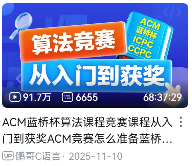
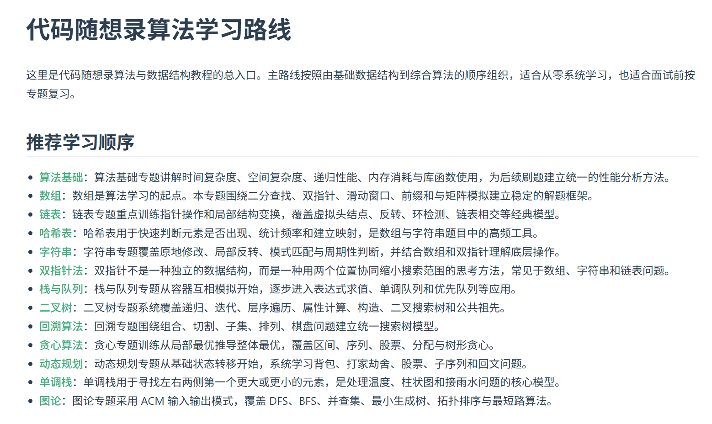
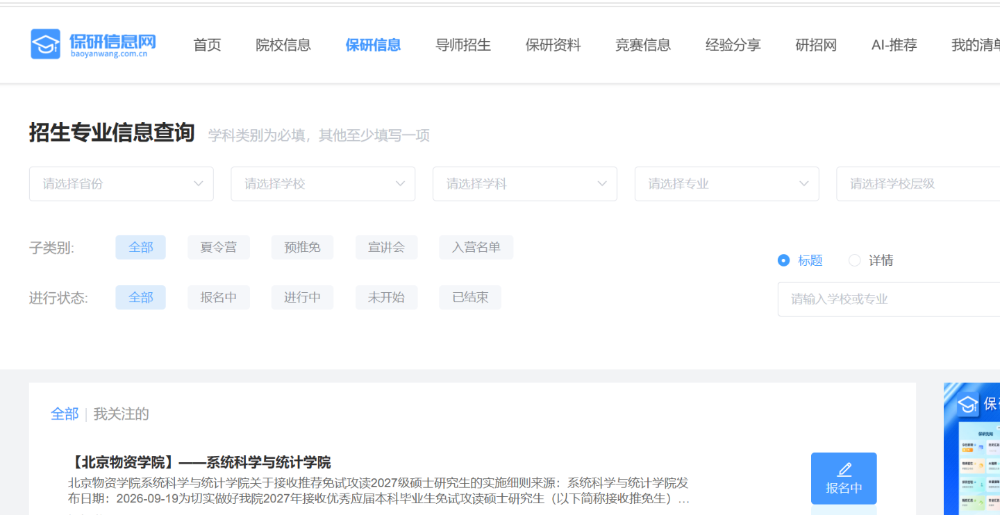

保研概览：申请流程与优缺点
保研申请流程
基本流程免全国统考初试，需获得推免资格并参加考核。
- 01本校遴选推免资格
依据成绩、综合表现等组织遴选
- 02参加目标院校考核
以材料审核和面试为主；部分含笔试、机试
- 03完成正式推免录取
按规定通过推免服务系统确认
优势与风险
优势
- 多校尝试
- 夏令营、预推免阶段通常可尝试多所学校
- 提前接触
- 可以更早接触导师、课题组与研究方向
- 选择更广
- 可申请硕士、直博、工程硕博等不同项目
风险
- 资格前提
- 前提是先取得本校推免资格
- 持续积累
- 前三年需持续保持成绩与综合竞争力
- 初筛竞争
- 热门学校、热门方向的材料初筛竞争可能很激烈
大一：把基础打牢，把成绩稳定下来
学业成绩与专业排名
认真对待必修课和学分绩点
尽早了解学院的推免评价规则
数学基础
高数、线代、概率统计
为机器学习、深度学习打基础
编程能力
Python 等编程语言
基础算法原理与代码调试
英语能力
尽早通过四六级
六级有能力可以刷到 550+
方向探索
B 站、小红书和 AI 了解方向
参与大创项目，初步接触科研
大二：明确研究方向，走进科研实践
研究方向的选择
先判断更偏就业还是学术，再结合兴趣与趋势选择方向
就业导向
- 重点考虑
- 实际岗位需求、技术要求
- 需要注意
- 热点变化快，重视趋势与通用能力
学术导向
- 重点考虑
- 个人兴趣、研究问题、长期投入
- 需要注意
- 不必一味追热点，适合深耕更重要
加入课题组参与科研
进入课题组，在真实科研任务中逐步积累能力
科研训练通常包括
核心积累
理解研究问题、方法设计与实验结论
明确个人贡献，重视科研过程而非只看成果
如何寻找合适的导师与科研机会？
本校老师 VS 外校老师
本校老师
线下沟通方便，适合长期参与科研
研究方向可能与个人兴趣不完全匹配
外校老师
提前了解目标课题组与科研环境
部分项目中导师认可有助于争取考核机会
导师影响力因学院招生机制而异
去哪里找老师？
本校渠道
学院通知、教师主页、学长学姐、大创项目等，主动邮件联系
外校渠道
小红书等平台、教师主页 / 课题组官网，邮件询问科研实习
大三：推进科研成果，做好推免准备
守住基本盘
继续保持成绩与专业排名
及时了解学院当届推免细则
梳理成果与简历
梳理论文、项目及个人贡献
整理证明材料，简历内容要讲得清
提前调研套磁
了解申请条件、考核方式与导师方向
建议 4—5 月联系导师，热门组可更早
提前准备
英文介绍、专业基础及科研汇报
提前了解笔试、算法机试等要求
大三下至大四初：完成推免申请与录取
材料准备
成绩单、排名证明
简历与科研成果证明
材料提前备齐
夏令营
确认优营与选拔效力
热门院校入营竞争激烈
未入营也无需气馁
预推免
重要的申请考核阶段
适当海投、设置保底
有稳妥保底后聚焦冲刺
九推 · 正式系统
正式报名与录取确认
留意新增名额和补充选拔
关注电话、通知与邮箱
十推 · 后续机会
关注后续轮次与补录
仍可争取剩余名额
严格留意系统截止时间
不同院校的选拔方式
面试
中科院自动化研究所 / 北航人工智能学院
- 科研项目、专业基础、英语与综合问答
- 无独立笔试或机试，但面试可能问到相关内容
笔试 + 面试
中科院计算所 VIPL 组 / 人大高瓴人工智能学院（工博）
- 部分项目先笔试筛选，通过后才能面试
- 也有项目将笔试成绩计入总分
机试 + 面试
中山大学计算机学院 / 复旦大学计算与智能创新学院
- 机试仅供面试参考：中山
- 机考计入总成绩：复旦计智，占 30%；浙大软院，占 15%
笔试 + 机试 + 面试
南京大学智能软件与工程学院 / 吉林大学计算机学院
- 同时考察专业基础、编程及综合能力
- 部分院校设置单项及格线
提前确认四件事
- 有无笔试 / 机试？
- 是筛选门槛还是计分？
- 英语考核形式？
- 面试重点是什么？
保研面试：正式面试与导师私面
英语考核
英语表达与理解能力
- 英文自我介绍、日常与科研问答
- 英文材料朗读、翻译、项目介绍
例：Please introduce yourself.
数学基础与专业知识
专业知识储备与原理理解
- 高数、线代、概率统计、凸优化
- 机器学习、计算机视觉、自然语言处理
例：残差网络 ResNet 中的残差连接有什么作用？
科研经历与个人贡献
科研工作的整体理解
- 研究问题、核心难点、方法思路
- 实验结果、评价指标、个人贡献
例：概括研究任务的难点，以及你们解决该难点的思路。
科研方法与技术深挖
方法设计与具体实现能力
- 选题动机、模型架构、模块作用
- 特征交互、张量维度、骨干网络
例：论文中的混合粒度注意力模块具体是如何实现的？
代码与工程实践
代码实现与实际动手能力
- Vibe Coding、PyTorch、模块实现
- 手写模块、GPU 训练与故障排查
例：实验过程中出现显存溢出 OOM，怎么解决？
综合素质与双向选择
个人素质与未来研究规划
- 思政问题、报考意愿、个人特点
- 研究兴趣、未来规划、前沿方向发展思考
例：请介绍一下多模态大模型的发展历程。
机试应该怎么准备？
ACM 蓝桥杯算法课程
先从算法基础篇开始
- 我直接从算法基础篇开始，没有看前面的课程。基础篇之后，可按时间做算法巩固。
- 部分章节虽不能免费观看，仍可从视频左侧目录查看题目，或去比特客堂查看章节题单。
- 把题目截图交给 AI，帮忙定位原题平台，再自己搜索练习。

代码随想录
用视频理解，再用文字复盘
- 跟着 B 站课程学习，也可以直接看配套文字版。
- 如果文字看不进去，先看视频理解思路，再回到文字版整理。
- 我在前一套课程后继续学习代码随想录，补充算法练习。

善用 AI 辅助刷题
定位题目、理解算法、排查问题
识别题目内容
查找平台与题号
分析涉及的知识点
我的机试准备时间线
时间紧：可以像我一样，从大三下开始准备。
想学扎实：建议早点开始，多刷几遍以免遗忘。
保研选拔中，哪些因素更重要？
六项因素的重要性排序（主观）
本科院校背景
专业排名（第 1，1%，3%，5%，10%）
已中稿 / 在投，是否一作
研究与项目能力
成绩及表达
可转化为科研经历 / 综测加分
保研选拔的三个阶段
资格 → 初筛 → 考核
本校推免
核心：获得推免资格专业排名，结合本校规定的科研、竞赛等综合评价项目。
外校材料初筛
核心：获得考核机会学校 Title、RK、论文产出、科研经历，以及英语和竞赛等申请材料。
正式考核
核心：展示实际能力科研理解、专业基础、英语表达与综合表现；部分院校设有笔试或机试。
保研信息获取与材料准备
善用信息平台与 AI 工具，准备经得起追问的申请材料
如何获取各院校招生信息？

保研信息网
- 集中查找夏令营、预推免通知
- 按学校、专业、招生类别筛选
- 具体要求以学院官网为准
利用 AI 辅助准备
示例工具：ChatGPT · DeepSeek · Codex
简历与申请材料
真实 · 清楚 · 有重点
简历上的每一项，都要自己讲清楚
论文、科研、项目、竞赛都可能被追问
说清方法、个人贡献和最终结果
不熟悉的内容，写进简历可能适得其反。
申请材料与面试简历不一定要相同
申请阶段按要求真实、完整展示已有成果
面试阶段若允许自带简历，突出熟悉的代表性经历
注意要核对申请与面试材料是否要求一致。
计算机保研交流群 · 绿群
大型非商业计算机保研交流社区
招生资讯 · 经验交流 · 资料共享
夏令营、预推免、考核经验及复习资料
可以在大二大三的时候加入